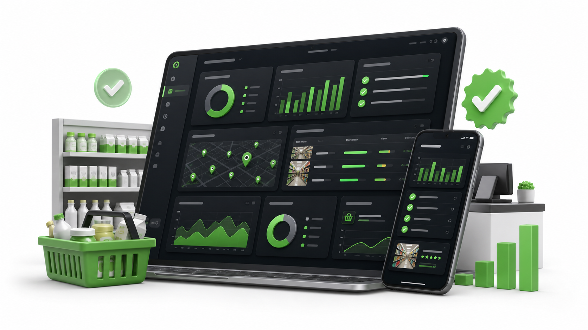

+22 mil
Momentos da experiência auditados em loja
Evidências reais para enxergar a operação além da rotinaDiagnóstico integrado para operações multiunidade
Quantos clientes passaram pelas suas lojas e tomaram essa mesma decisão?
Momentos da experiência auditados em loja
Evidências reais para enxergar a operação além da rotinaRedução de uma falha crítica após acompanhamento
Correção acompanhada antes que o padrão se deteriorasseOportunidades identificadas antes de virarem problemas maiores
Prioridades convertidas em plano de açãoO silêncio que custa caro
A maioria das empresas reage ao que consegue enxergar: reclamações, avaliações negativas e quedas no faturamento.
Mas o cliente perdido quase nunca avisa. Pequenas falhas no atendimento, na execução e na experiência se repetem todos os dias até que o consumidor simplesmente escolha outro lugar.
Encontrar falhas que afastam clientesComo descobrimos o que a gestão não vê
Nenhuma fonte isolada revela toda a realidade. A Observe+ cruza o que um profissional identifica, o que o cliente sente e o que a operação acredita estar entregando.
Um profissional treinado percorre a jornada, identifica desvios e registra evidências que passam despercebidas na rotina.
Ver como as visões se cruzam →NPS, relatos e avaliações revelam onde a experiência gera confiança ou faz o consumidor considerar outra empresa.
Ver como as visões se cruzam →Checklists e a leitura da liderança mostram como padrões, processos e rotinas estão sendo cumpridos em cada unidade.
Ver como as visões se cruzam →Dados externos, percepção real e leitura interna.
Convergências e divergências ficam visíveis.
Um diagnóstico comparável para priorizar riscos.
Responsáveis e prioridades para orientar a correção.
Do silêncio à decisão
O Observe+ Score transforma diferentes evidências em uma leitura comparável da operação. Assim, a liderança identifica quais lojas precisam de atenção, quais falhas estão se repetindo e o que deve ser corrigido primeiro.
A composição ao lado é uma visão ilustrativa da metodologia. A disponibilidade de cada recurso deve ser confirmada na proposta comercial.
Quero conhecer o Score da minha operação
A Observe+ já acompanha operações reais para identificar falhas, proteger padrões e transformar evidências em planos de ação.


“Os relatórios detalhados nos ajudaram a identificar oportunidades e reforçar boas práticas.”
“A análise criteriosa nos ajudou a ajustar processos e elevar o padrão de atendimento.”
“A Observe+ transformou informação da linha de frente em direcionamento para gestão.”
A Observe+ transforma diferentes pontos de vista sobre uma mesma operação em um diagnóstico integrado.
Unimos a visão do Auditor Profissional, a experiência do Cliente Real e a leitura da Operação Interna para revelar divergências, proteger o padrão da marca e orientar decisões.
Não avaliamos apenas se a loja parece funcionar. Mostramos onde a experiência está falhando e o que precisa ser corrigido primeiro.
O resultado financeiro vem depois do diagnóstico
Simule o impacto financeiro de pequenas falhas que fazem consumidores desistirem de comprar novamente.
Entre em contato pelo WhatsApp, compartilhe o objetivo da operação e montamos um roteiro inicial para avaliar unidades, setores e frequência.
O Score reúne três perspectivas complementares: Auditor Profissional, Cliente Real e Operação Interna. A composição permite enxergar o que cada visão isolada deixaria passar.
As evidências, percepções e checklists são organizados para destacar convergências e divergências. A fórmula e os pesos dependem da metodologia aprovada para cada operação e não são inventados nesta apresentação.
Não. A IA entra depois do diagnóstico para apoiar interpretação, priorização e recomendações. As três fontes que formam o Score continuam sendo humanas e operacionais.
O site coleta somente os dados necessários para contato e simulação. A exportação de leads exige autorização por token e o armazenamento configurado para produção é privado.
Supermercados, varejo, restaurantes, hotelaria e outras redes que precisem comparar unidades, proteger padrão e melhorar a jornada do cliente.
Descubra as falhas que sua operação ainda não está enxergando e transforme evidências em prioridades claras de ação.
Quero descobrir por que meus clientes não voltam Diagnóstico indicado para redes, franquias e operações com múltiplas unidades.